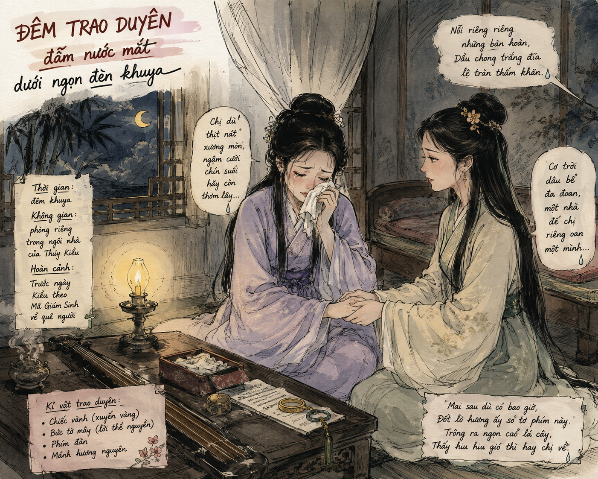
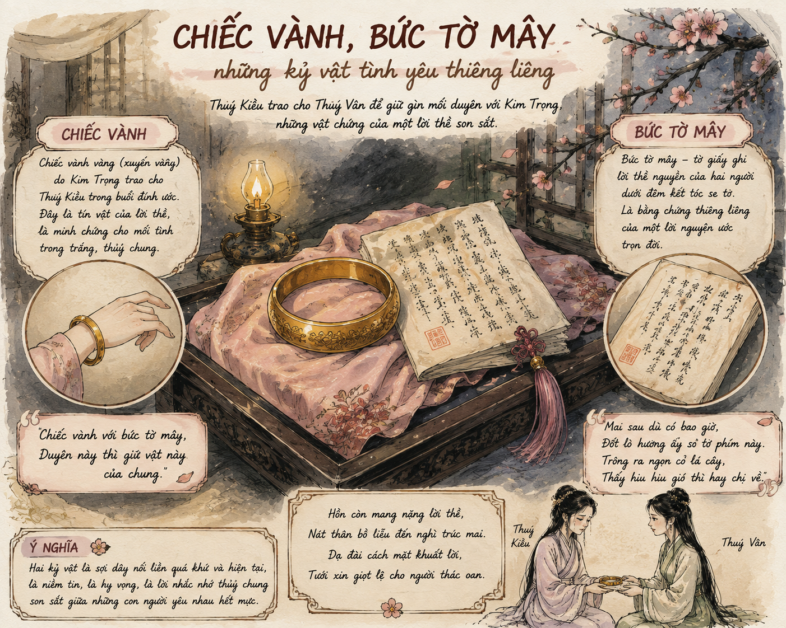

Mối tình Kim – Kiều được Nguyễn Du miêu tả như một "thiên tình sử" tuyệt đẹp. Trong trạng thái "nỗi nàng canh cánh bên lòng biếng khuây", tai ương bất ngờ ập đến gia đình Thúy Kiều. Để có tiền cứu cha và em thoát khỏi tù tội, Kiều phải bán mình. Trước ngày theo Mã Giám Sinh, nàng thao thức trong tâm trạng day dứt, đau khổ và quyết định nhờ cậy Thúy Vân thay mình nối duyên với Kim Trọng.
Đoạn trích thuộc phần thứ hai "Gia biến và lưu lạc" (từ câu 711 đến câu 756) trong tác phẩm Truyện Kiều của Đại thi hào Nguyễn Du.

Hình 1: Bối cảnh đêm trao duyên đẫm nước mắt dưới ngọn đèn khuya (h1.png)
Hình dung bối cảnh của cuộc trao duyên (thời gian, không gian, hoàn cảnh của nhân vật Thúy Kiều).
Thời gian: Đêm muộn ("chong trắng đĩa", "tàn canh").
Không gian: Dưới ngọn đèn khuya tĩnh lặng, vắng vẻ.
Hoàn cảnh: Gia đình gặp biến cố lớn (bị vu oan), Kiều phải bán mình chuộc cha. Đêm trước ngày theo Mã Giám Sinh, Kiều trằn trọc khóc thương cho mối tình dở dang với Kim Trọng. Thúy Vân tỉnh giấc ghé thăm, tạo tiền đề cho cuộc trao duyên.
* Nỗi niềm của Thúy Kiều và lời hỏi han của Thúy Vân:
Nỗi riêng riêng những bàn hoàn,
Dầu chong trắng đĩa lệ tràn thấm khăn.
Thúy Vân chợt tỉnh giấc xuân,
Dưới đèn ghé đến ân cần hỏi han:
“Cơ trời dâu bể đa đoan,
Một nhà để chị riêng oan một mình.
Có chi ngồi nhẫn tàn canh,
Nỗi riêng còn mắc mối tình chi đây?”
* Thúy Kiều giãi bày và nhờ cậy Thúy Vân:
Rằng: “Lòng đương thổn thức đấy,
Tơ duyên còn vướng mối này chưa xong.
Hở môi ra cũng thẹn thùng,
Để lòng thì phụ tấm lòng với ai!
Cậy em em có chịu lời,
Ngồi lên cho chị lạy rồi sẽ thưa.
Giữa đường đứt gánh tương tư,
Keo loan chắp mối tơ thừa mặc em.
Kể từ khi gặp chàng Kim,
Khi ngày quạt ước khi đêm chén thề.
Sự đâu sóng gió bất kỳ,
Hiếu tình khó lẽ hai bề vẹn hai.
Ngày xuân em hãy còn dài,
Xót tình máu mủ thay lời nước non.
Chị dù thịt nát xương mòn,
Ngậm cười chín suối hãy còn thơm lây.
* Thúy Kiều trao kỷ vật và dặn dò:
Chiếc vành với bức tờ mây,
Duyên này thì giữ vật này của chung.
Dù em nên vợ nên chồng,
Xót người bạc mệnh ắt lòng chẳng quên.
Mất người còn chút của tin,
Phím đàn với mảnh hương nguyền ngày xưa.
Mai sau dù có bao giờ,
Đốt lò hương ấy so tơ phím này.
Trông ra ngọn cỏ lá cây,
Thấy hiu hiu gió thì hay chị về.
Hồn còn mang nặng lời thề,
Nát thân bồ liễu đến nghì trúc mai.
Dạ đài cách mặt khuất lời,
Tưới xin giọt lệ cho người thác oan.
* Lời từ biệt tha thiết dành cho Kim Trọng:
Bây giờ trâm gãy hương tan,
Kể làm sao xiết muôn vàn ái ân!
Trăm nghìn gửi lạy tình quân,
Tơ duyên ngắn ngủi có ngần ấy thôi.
Phận sao phận bạc như vôi,
Đã đành nước chảy hoa trôi lỡ làng.
Ôi Kim lang! Hơi Kim lang!
Thôi thôi thiếp đã phụ chàng từ đây!”
📌 Cốt lõi kiến thức: Nghệ thuật dùng từ trong lời nhờ cậy
Kiều đưa ra 3 lý do thuyết phục vô cùng thấu tình đạt lý:
📦 Các kỷ vật tình yêu được trao:
Chiếc vành, bức tờ mây, phím đàn, mảnh hương nguyền.
Tâm trạng mâu thuẫn đau đớn: Khi trao kỷ vật, Kiều nói "Duyên này thì giữ vật này của chung". Duyên đã trao cho Vân nhưng kỷ vật vẫn là ký ức tình yêu chung của cả ba người. Kiều rơi vào trạng thái xé lòng giữa thực tại nghiệt ngã và linh hồn vẫn vướng vương tình thề.

Hình 2: Chiếc vành, bức tờ mây - những kỷ vật tình yêu thiêng liêng (h2.png)
Kiều dặn Vân sau này khi "nên vợ nên chồng" với Kim Trọng thì vẫn xin hãy xót thương cho người chị "bạc mệnh". Nàng tưởng tượng đến tương lai âm dương cách biệt, linh hồn mình biến thành ngọn gió hiu hiu trở về ngọn cỏ lá cây để chứng giám cho lời thề. Cho thấy sự giằng xé giữa vị trí trao duyên và nỗi đau mất mát bản thể.
💔 Nỗi đau tuyệt vọng đến đỉnh điểm:
Kiều hướng hoàn toàn suy nghĩ về Kim Trọng. Sử dụng các thành ngữ bi thương: "trâm gãy hương tan", "nước chảy hoa trôi".
Tiếng gọi tha thiết đau đớn: "Ôi Kim lang! Hơi Kim lang! / Thôi thôi thiếp đã phụ chàng từ đây!" - Kiều nhận hết trách nhiệm, phụ lòng người yêu dù nàng chính là nạn nhân của số phận.
| Giá Trị Nội Dung | Giá Trị Nghệ Thuật |
|---|---|
|
• Thể hiện bi kịch tình yêu tan vỡ và số phận bất hạnh của Thúy Kiều. • Tôn vinh nhân cách cao đẹp của Kiều: một người con hiếu thảo, một người tình thủy chung, giàu vị tha và lòng tự trọng. |
• Nghệ thuật miêu tả diễn biến tâm lý nhân vật tinh tế, sâu sắc bậc thầy. • Kết hợp tài tình giữa ngôn ngữ bác học và ngôn ngữ bình dân. • Sử dụng thành công các thành ngữ, điệp từ, từ cảm thán sắc sảo. |
Câu 1 (Trang 16): Bố cục đoạn trích và phương thức biểu đạt (lời kể, đối thoại, độc thoại)?
Bố cục 3 phần:
• 12 câu đầu: Lời Thúy Kiều nhờ cậy và thuyết phục Thúy Vân (Lời đối thoại với Vân).
• 14 câu tiếp: Thúy Kiều trao kỷ vật và dặn dò em (Lời đối thoại chuyển dần sang độc thoại nội tâm).
• 8 câu cuối: Thúy Kiều hướng về Kim Trọng, lời từ biệt (Lời độc thoại nội tâm tâm sự với người vắng mặt).
• 4 câu mở đầu đoạn trích là lời của người kể chuyện.
Câu 2 (Trang 16): Thúy Kiều nảy sinh ý định trao duyên trong thời điểm nào?
Thời điểm: Đêm cuối cùng trước khi Thúy Kiều phải theo Mã Giám Sinh về quê người. Trong lúc trằn trọc thắp đèn khóc thương cho mối tình dở dang, Thúy Vân tỉnh giấc hỏi han, tạo cơ hội thuận lợi để Kiều ngỏ lời nhờ cậy trao duyên.
Câu 3 (Trang 16): Thái độ nhờ cậy, căn cứ thuyết phục và lời dặn dò khi trao kỷ vật?
a. Thái độ: Thành kính, trang trọng, vung xới sự thiêng liêng ("cậy", "chịu lời", "lạy", "thưa").
b. Căn cứ thuyết phục: Tình chị em máu mủ, mối tình dang dở với Kim Trọng, và sự xót thương cho cái chết tinh thần của Kiều.
c. Lời dặn dò: Giữ kỷ vật làm vật chung; tưởng nhớ người chị bạc mệnh trong tương lai.
d. Diễn biến tâm lý: Chuyển biến từ sáng suốt, tỉnh táo lý trí (khi thuyết phục em) sang xúc động, giằng xé cuồng nát tâm can (khi trao kỷ vật và đối diện với linh hồn mình).
Câu 4 (Trang 16): Phân tích diễn biến tâm trạng Thúy Kiều trong 10 dòng thơ cuối?
Kiều hoàn toàn quên đi sự hiện diện của Thúy Vân xung quanh để quay về đối thoại hướng đến Kim Trọng. Giọng điệu chuyển sang đau đớn, nghẹn ngào, tuyệt vọng. Lời gọi "Ôi Kim lang! Hơi Kim lang!" cùng lời tạ lỗi "thiếp đã phụ chàng" cho thấy nỗi đau đứt ruột của người phụ nữ nhận hết phần lỗi về mình vì không giữ trọn lời thề.
Câu 5 (Trang 16): Nhận xét nghệ thuật sử dụng từ ngữ của Nguyễn Du?
Nguyễn Du sử dụng từ ngữ vô cùng chuẩn xác, đắt giá. Ví dụ ví dụ tâm đắc: Hai từ "cậy" và "chịu" ở câu "Cậy em em có chịu lời". Nguyễn Du không dùng "nhờ - nhận" mà dùng "cậy - chịu" vừa thể hiện niềm tin tha thiết vừa đặt Vân vào thế không thể chối từ, bộc lộ tài năng ngôn từ đỉnh cao.
"Keo loan": Điển tích chế từ máu chim loan dùng để nối dây đàn bị đứt. Trong đoạn trích, "keo loan" tượng trưng cho mối duyên tình được Thúy Vân nối tiếp giúp Thúy Kiều.
"Tờ mây": Giấy vẽ mây rồng dùng viết lời thề nguyện đôi lứa.
Viết một đoạn nhật ký tưởng tượng nhập vai Thúy Vân ghi lại những suy nghĩ, cảm xúc và sự thấu hiểu dành cho chị Kiều sau khi nhận lời trao duyên trong đêm sâu tĩnh mịch.
Không nên hiểu việc "trao duyên" là sự coi thường tình cảm hay áp đặt. Đó là quyết định đớn đau nhất của Kiều khi bị đặt vào bi kịch "Hiếu tình khó lẽ hai bề vẹn hai".
Thử thách 10 câu hỏi trắc nghiệm mức độ Nhận biết - Thông hiểu - Vận dụng
Hãy chỉ ra các cặp từ xưng hô được Thúy Kiều sử dụng từ đầu đến cuối đoạn trích và phân tích sự thay đổi tâm lý tương ứng.
Lời giải chi tiết:
• Giai đoạn 1 (12 câu đầu): Xưng "chị - em". Đây là mối quan hệ chị em ruột thịt trong gia đình, Kiều dùng để thuyết phục Vân bằng tình máu mủ.
• Giai đoạn 2 (14 câu tiếp): Chuyển sang tư thế trao kỷ vật, từ ngữ chuyển sang "ta - người" / "chị - em" trong sự dằn xé giữa kỷ vật chung và tình cảm riêng.
• Giai đoạn 3 (8 câu cuối): Xưng "thiếp - chàng" / "tình quân" / "Kim lang". Kiều quên đi thực tại xung quanh, đối thoại trực tiếp trong tâm tưởng với Kim Trọng. Sự thay đổi từ xưng hô gia đình sang xưng hô vợ chồng thể hiện đỉnh điểm nỗi đau tan vỡ tình yêu.
Thống kê trong 54 câu thơ có bao nhiêu từ ngữ chỉ sự rơi lệ, cái chết và sự tan vỡ (Ví dụ: lệ, thịt nát xương mòn, ngậm cười chín suối, thác oan, trâm gãy hương tan, phận bạc như vôi...). Nhận xét về tác động của các từ ngữ này đến cảm xúc người đọc.
Lời giải chi tiết:
• Thống kê cho thấy có hơn 15 từ ngữ và hình ảnh trực tiếp nhắc đến cái chết, sự đau đớn và chia lìa bi thương trong tổng số 54 câu thơ (tỷ lệ hơn 27% số câu thơ chứa đựng từ ngữ mang sắc thái bi thảm).
• Tác động nghệ thuật: Mật độ từ ngữ bi thương dày đặc phản ánh chân thực cuộc đấu tranh nội tâm khủng khiếp. Thúy Kiều coi việc trao duyên và trao tình yêu cho người khác giống như một cái chết về mặt tinh thần. Qua đó làm nổi bật giá trị nhân đạo sâu sắc: niềm thương cảm tha thiết của Nguyễn Du trước số phận người phụ nữ tài hoa bạc mệnh.
Viết đoạn văn (khoảng 150 chữ) chỉ ra biểu hiện của sự "hiểu" và "thương" của Nguyễn Du đối với Thúy Kiều trong đoạn trích "Trao duyên".
Đoạn văn mẫu tham khảo:
Đoạn trích "Trao duyên" là minh chứng cảm động cho tấm lòng "hiểu" và "thương" sâu sắc của Đại thi hào Nguyễn Du dành cho Thúy Kiều. Nguyễn Du "hiểu" trọn vẹn những bi kịch giằng xé khốn cùng trong tâm hồn người thiếu nữ tài hoa. Ông thấu hiểu cái khó, cái đau khi Kiều phải chọn lựa giữa "Hiếu" và "Tình", hiểu nỗi ngượng ngùng "hở môi ra cũng thẹn thùng" khi nhờ em thay mình nối duyên. Từ sự thấu hiểu ấy, trái tim nhà thơ dạt dào niềm "thương" cảm sâu sắc. Nguyễn Du xót xa cho bi kịch tình yêu tan vỡ, hóa thân vào nhân vật để cất lên tiếng khóc xé lòng "Ôi Kim lang! Hơi Kim lang!". Sự "hiểu" và "thương" ấy đã nâng tầm giá trị nhân đạo của tác phẩm, biến đoạn trích thành một tiếng nói tri âm vượt thời đại.